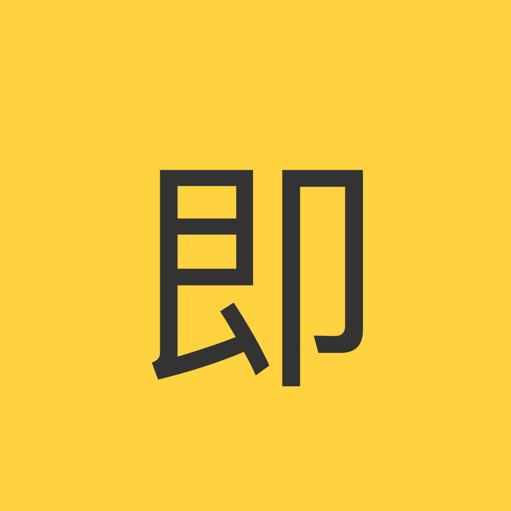

林间来信 刚刚
好的阅读体验，不只是内容本身，也来自清晰的层级、合适的行距和专注的页面布局。
♡ 24○ 3↗ 1

优化网页排版、转发详情、用户卡片与图片浏览体验。
请在 Safari 的“扩展”设置中启用本扩展。
扩展已启用，可在支持的网页中使用。
扩展尚未启用。
离线演示无需账号或网络；扩展仅在 web.okjike.com 上运行。
使用本地示例完整体验扩展功能，无需登录或安装其他 App。
切换查看居中布局、舒适字重与行距带来的变化。
好的阅读体验，不只是内容本身，也来自清晰的层级、合适的行距和专注的页面布局。
优化后的字体与留白，让长内容更容易浏览，也让交互区域更清楚。
转发内容直接展示媒体与链接；悬停或点击用户名可查看资料。
这是一条包含完整上下文的转发详情，媒体内容无需再次跳转即可查看。
傍晚的蓝色时刻很短，但值得停下来认真看看。
点击图片后可使用按钮、滚轮、双击和键盘进行 1×–6× 缩放。
滚轮或 ＋/− 缩放 · 双击切换 1×/2× · 方向键移动 · 0 还原